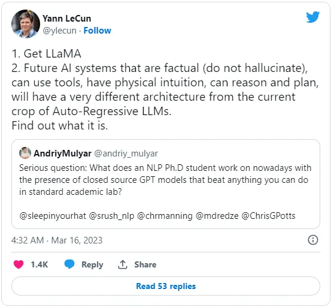
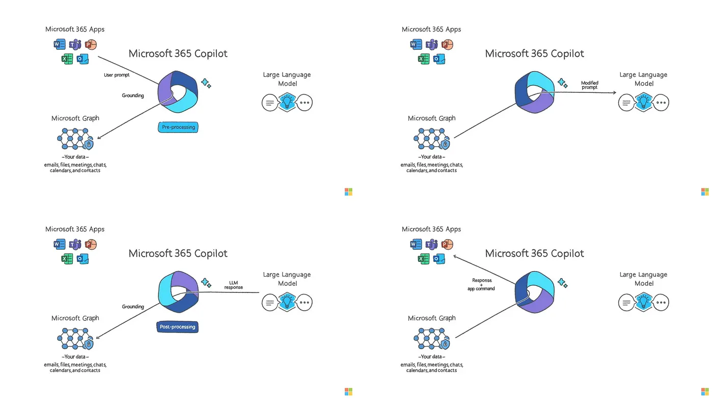
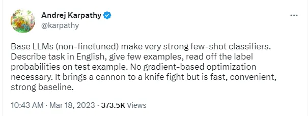

ChatGPT 发布至今还不到 4 个月，整个行业乃至整个世界已被彻底颠覆。每一项变革性技术都会带来想象、机遇与改变。新的赢家将被加冕，也会有输家。下面我分享自己对所在行业的思考与展望。本文的第一部分在这里。
未来比我们想象的来得更快。
过去两周，我们的行业见证了也许是计算领域有史以来最密集、最令人瞩目的一系列技术发布。AI 互联网的整个技术栈全面亮相，展现出无限的希望与激情。
3 月 14 日，GPT-4 发布，距离 ChatGPT 向全世界推出仅三个半月。ChatGPT 的推出标志着一个新时代的开始，正如英伟达 CEO 黄仁勋在 3 月 21 日的 GTC 2023 主题演讲中所说，这是一个“iPhone 时刻”。而仅仅 9 天后的 3 月 23 日，OpenAI 又宣布在 ChatGPT 中推出插件，使其能够获取最新信息、运行计算或使用第三方服务，许多人欢呼这在意义上堪比“App Store 时刻”。作为对照：iPhone 于 2007 年 6 月 29 日发布，iOS SDK 在三个半月后的 2007 年 10 月 17 日宣布，并于 2008 年 3 月 6 日推出，由此开启了移动互联网时代。
3 月 13 日（周一），斯坦福推出了 Alpaca 7B，这是一个基于 Meta 的 LLaMA 7B 模型微调而来的模型，而 LLaMA 在 2 月 24 日才刚刚向研究人员开放。在单轮指令跟随上，Alpaca 的表现与 OpenAI 的 text-davinci-003 在质量上相近，却出奇地小巧，复现起来简单又便宜。仅仅 11 天后，在随后的周五 3 月 24 日，Databricks 开源了 Dolly。它基于 EleutherAI 现有的开源 GPT-J 6B 模型，并用 Alpaca 的指令集进行微调，让大语言模型走向普及：从只有极少数公司负担得起的东西，变成每家公司都可以拥有、定制并用来改进自家产品的通用品。
一切都关乎速度与加速计算。3 月 15 日，PyTorch 迎来升级，新增的编译模式有望在训练和推理阶段为模型提速。
针对多样化的 AI 工作负载，英伟达以全新的硬件阵容，为世界带来了强大得多的推理能力和数据传输速度，尤其是 H100 NVL（面向类 GPT 的处理）和 Grace-Hopper（面向推荐系统和超大规模向量数据库）。微软 Azure 也开放了由英伟达 DGX H100 驱动的 AI 超级计算机的私人预览。
在我看来，更值得关注、却较少被媒体报道的，是英伟达在技术栈中的向上延伸。尽管仍处于起步阶段，英伟达 NeMo 勾勒出了一个中间件层的蓝图，让定制的大语言模型可以被大规模地训练、调优和部署。
在文本生成图像方面，MidJourney 于 3 月 16 日发布了 V5，距 V4 alpha 仅四个半月，能够生成照片级逼真的图像，质量之高，以至于一些 AI 艺术爱好者称之为“过于完美”。不到一周后的 3 月 21 日，Adobe 发布了 Firefly，展示了生成式 AI 如何无缝融入 Creative Cloud 产品，契合反复迭代的创作过程。
同样，3 月 16 日，微软发布了 Microsoft 365 Copilot，展示了 GPT-4 如何融入其生产力套件，而距离该公司 2 月 7 日发布新版必应和 Edge 才一个多月。大公司们正以创业公司的速度前进，唯独谷歌例外：它在 AI 技术上处于领先，却似乎对这一时刻毫无准备。尽管仍然是一个可信、强大且举足轻重的玩家，谷歌还是有值得向它在雷德蒙德的那位朋友学习的地方。
锦上添花的是，在开发工具方面，GitHub 于 3 月 22 日发布了 Copilot X，把 GPT-4 带进 IDE 和命令行，减少样板代码和手工操作，让整个开发生命周期中的复杂工作变得更容易。
这些技术代表了各自领域中最顶尖的水平和最前沿的成果。一个接一个地观看这些发布，就像在观赏一场绚烂的烟火表演，色彩缤纷、声势浩大，充满了兴奋与欢呼，时而还有令人惊喜的意外。在 3 月 14 日至 3 月 24 日这短短两周展示的产品中，一个全新的 AI 技术栈正在我们眼前展开。
在第一周才过去两天时，Netscape 和 a16z 的创始人马克·安德森（Marc Andreessen）就这样评论道：
一周之后，第二周的第二天，3 月 21 日，比尔·盖茨发表了一篇文章，宣告“AI 时代已经开始”。他把 OpenAI 开发的技术与 1980 年的图形用户界面（GUI）相提并论：在他看来，这是他一生中仅有的两项让他觉得具有革命性的技术。有意思的是，二者都以一种全新且更好的方式处理人机交互。甚至有人提议了一个名字：LUI，语言用户界面。“AI 的进步将使创造个人代理成为可能……这既能改进你想做的工作，也能把你从不想做的工作中解放出来。”盖茨说，这与蒂姆·伯纳斯-李的设想遥相呼应。
时间仿佛被压缩了。自 ChatGPT 推出以来，我们看到了它催生的如此多的反应与创新。过去 20 年里每一项渐进式的技术进步，无论是神经网络、MapReduce、大数据、基于 GPU 的加速计算、云服务、Python 库，还是深度学习多年来大多不为人注意却至关重要的研究进展，似乎都汇聚到了这一刻。我们只是幸运地活着，见证一个全新平台的诞生和一个全新范式的出现。世界正在我们眼前改变。新产品，以及现有产品中的新能力，正接踵而至。
现在是时候从六万英尺的高空降到海平面，想一想这些重要的发布与变化意味着什么，以及未来可能会是什么样子。
英伟达实际上已经成为桌面互联网时代的 Sun Microsystems。Sun 有一句著名的营销口号：“我们是 dot-com 中的那个 dot”；而英伟达，就是 AI 互联网中 dot-ai 的那个 dot。
AI 互联网时代将需要大量的加速计算。其他玩家（无论是桌面游戏 GPU 领域，还是数据中心 GPU 和 DPU 领域）将如何回应英伟达在 GTC 上发布的全面产品线，还有待观察。但它们一定会回应。
同样有待观察的是，拥有 TPU 的谷歌和拥有 DOJO 超级计算机的特斯拉，是否会认真进入这一领域。
如果以 web1.0 为鉴，未来还会出现一体化、自成体系的“一体机”方案，用于本地训练和推理。一个潜在的使用场景是个人代理和组织代理：对于私有和专有数据，人们更希望在本地存储和访问。
OpenAI 的 GPT-4 所展现的能力，给研究界带来了巨大冲击，尤其是自然语言处理（NLP）和计算机视觉（CV）领域。下面是杨立昆（Yann LeCun）的反应：

大语言模型最大的问题是幻觉。杨立昆对自回归大语言模型持怀疑态度，并有他自己的愿景。就连杰弗里·辛顿（Geoffrey Hinton）也不认为反向传播是人脑的工作方式。他们都相信，会出现一种值得研究界关注的新型模型研究。
尽管存在种种问题，在可预见的未来，大语言模型仍将是王者，仍将是平台。值得注意的是，OpenAI 的成功在很大程度上归功于艰苦细致的训练数据收集、整理和工程工作，这些工作被投入到用 RLHF 等技术对大语言模型进行微调之中。这正是 Meta 所欠缺的。
OpenAI 首席科学家伊利亚·苏茨克维（Ilya Sutskever）也提到，模型的可靠性和可信度是 OpenAI 的重点和前沿研究方向。他们的目标是让模型在不确定时主动请求澄清，在不知道时说“不知道”，并且能可靠地做到这一点。他对大语言模型的判断要乐观得多：在他从业的 20 年里，最让他惊讶的事情就是，“它居然真的管用”。
OpenAI 插件的发布不仅让模型进一步平台化，我甚至认为这是必须的，因为插件提供了一种架构，可以回应外界对大语言模型的一些批评。
这次推出了 4 类插件：
插件生态将在未来几个月里蓬勃发展，AI 会越来越像人类助理，帮助我们完成日常琐事。当插件数量增长起来之后，我们如何确保公平、质量和安全？而且由于插件托管在网络上，其他大语言模型也可以利用同样的插件，立即免费继承这个生态（是否免费，取决于 OpenAI 会有多开放）。这个生态系统的演进仍处于非常早期的阶段。
我们将看到几种趋势同时发生：
此外，多模态将成为模型产品的主旋律。我们将看到模型具备各种“X 到 Y”的组合能力，其中 X、Y ∈ {文本、图像、音频、视频、演示文稿、3D 模型}，甚至是更具领域特色的输出，比如电影、音乐、SQL、代码、应用、图表、UI 设计、CAD 设计、游戏角色与素材，或者蛋白质与基因组序列。摘要、搜索和推荐也将从文本扩展到其他模态，比如视频摘要。
web3.0 关于语义网的愿景，即由各类代理相互交互、代表我们行事所构成的网络，正变得越来越具体。身份认证、授权、支付等基础设施层面的问题仍有待解决。我相信，随着 AI 助理在全世界越来越普及、越来越无处不在，区块链可以作为现有技术的补充发挥作用。
随着越来越多的开发者开发定制模型和插件，一个新平台总会带来中间件层的繁荣。英伟达进入这一层，印证了前方的机遇。
我们将看到大大小小的公司进入这一领域，提供各具特色或更为全面的产品，面向新模型以及基于这些模型的应用的端到端开发与部署。
在训练方面，现有的提示工程工具、微调工具、RLHF 工具、数据集版本与管理工具、MLOps 和 LLMOps 工具、数据注入与链式调用工具，都将成为全面的中间件产品的一部分。
在推理方面，我们将看到更多易于使用的优化技术和工具被开发出来并投入使用，支持英伟达产品之外的多种架构。而且就像内容分发有 CDN 一样，未来也可能出现专门从事推理分发的公司。

Microsoft 365 Copilot 树立了一个好榜样：它展示了如何在应用中利用生成式 AI 的能力，以及一个“接地”（grounding）系统如何协调用户、用户数据和大语言模型，从而带来安全、贴合上下文且用户友好的生成式体验。

如果微软和一些公司把这种接地/对齐能力（负责任 AI 检查、安全、合规、隐私等）以及编排能力产品化，用来帮助开发者，并成为中间件层的一部分，我不会感到意外。我还猜测，在一个聊天机器人输出的概率性结果不断膨胀的世界里，会有越来越多的使用场景需要把大语言模型当作分类器，来产生某种程度上确定性的输出。

当世界仍在为 MidJourney 生成的图像惊叹时，Adobe Firefly 让我们得以一窥基于生成式 AI 的应用的核心要素。关键在于支持迭代式开发。那些只能一次性生成内容、却不能在此基础上反复迭代的应用，不会成功。以 Adobe 为例，支撑 Firefly 的底层模型在生成第一版输出之后，可以精准、迭代地回应用户持续的编辑提示。而当需要更精细的编辑时，Firefly 会无缝地融入 Adobe 现有的图像编辑算法，帮助创作者创作出真正想要的内容，没有歧义，也没有不想要的内容。
这种体验将适用于任何生成的内容，无论是文本、图像、音频、视频、设计还是其他任何模态。在这场应用重写的大潮中，我们仍处于非常早期的阶段。那些把用户体验和迭代式开发流程做对的厂商，无论是创业公司还是老牌玩家，都会赢；做不到的，将会落败乃至消亡。
安德烈·卡帕西（Andrej Karpathy）在 2017 年关于软件 2.0 的预测完全命中。但正如他在 2022 年的文章《深度神经网络：33 年前与 33 年后》中所预测的，在我们走到不再需要训练神经网络的那一天之前，还会有大量神经网络被训练和部署，并在好与坏两个方面深刻影响我们每个人。在技术栈的每一层，我们都会看到创业公司重新构想全新的生活与工作方式，老牌玩家也会焕发活力、奋起竞争。发布的节奏也许不会像我们刚刚目睹的那样密集，但同样会精彩纷呈。
莱克斯·弗里德曼（Lex Fridman）在周末发布了他对 OpenAI 创始人萨姆·奥尔特曼的个人访谈。同一个周末，关于 GPT-5 的讨论就已经出现了。

无论是传言还是事实，GPT-5、GPT-6 乃至 GPT-n 都会在该来的时候到来，一代比一代强大，甚至会以不同的形态出现。AGI 的影响将在我们的余生中不断回响。我们作为人类社会准备好了吗？我们每个人准备好了吗？
在技术不断进步的同时，我们也必须尽最大努力，借用埃隆·马斯克的话来说，“最大化未来美好的概率”。让我用莱克斯在他的播客开头所说的话来结束这篇文章：
“我们正站在根本性社会变革的悬崖边上。这一刻很快就会到来，没有人知道是什么时候，但包括我在内的许多人相信，它会在我们有生之年到来：人类这个物种的集体智慧，将在许多数量级上相形见绌于我们所构建并大规模部署的 AI 系统中的通用超级智能。这既令人兴奋，又令人恐惧。令人兴奋，是因为它有无数我们已知和尚未知晓的应用，将赋予人类创造的能力、繁荣发展的能力，帮助人类摆脱当今世界上普遍存在的贫困与苦难，并在那古老而极富人性的对幸福的追求中取得成功。令人恐惧，是因为超级智能的 AGI 所掌握的力量，可能有意或无意地摧毁人类文明。那是窒息人类精神的力量：或是乔治·奥威尔《1984》中的极权方式，或是《美丽新世界》中由享乐驱动的集体癫狂，正如赫胥黎所预见的，人们会爱上对自己的压迫，崇拜那些让他们丧失思考能力的技术。这就是为什么此刻与领导者、工程师和哲学家，无论是乐观者还是怀疑者，进行这些对话如此重要。这些不仅仅是关于 AI 的技术对话。这些是关于权力的对话：关于部署、制约和平衡这种权力的公司、机构和政治制度，关于激励这种权力保持安全、与人类对齐的分布式经济体系，关于部署 AGI 的工程师和领导者的心理，以及关于人性的历史，关于我们在大规模层面上行善与作恶的能力。”
注：以上文字稿由我用不到一个小时写的代码提取而成，借助了 ChatGPT 和 OpenAI 的 Whisper API。这已经成为新的工作方式。
注：这两周内与 AI 相关的发布远比上面列出的要多。